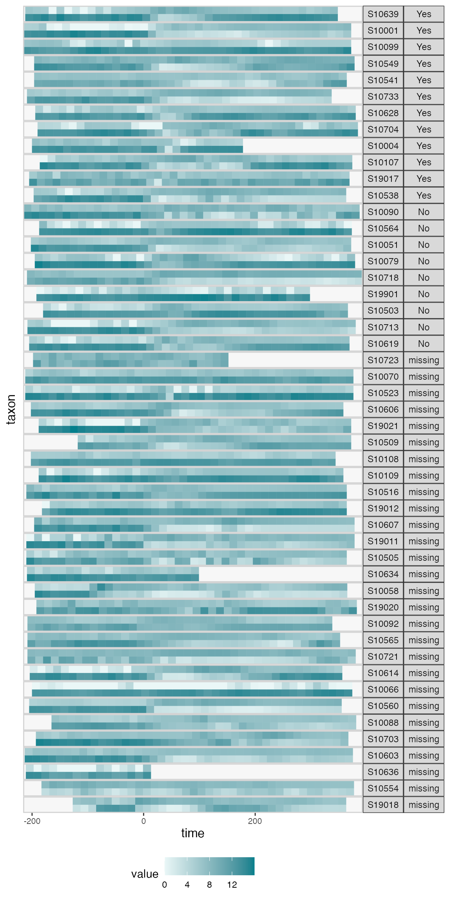
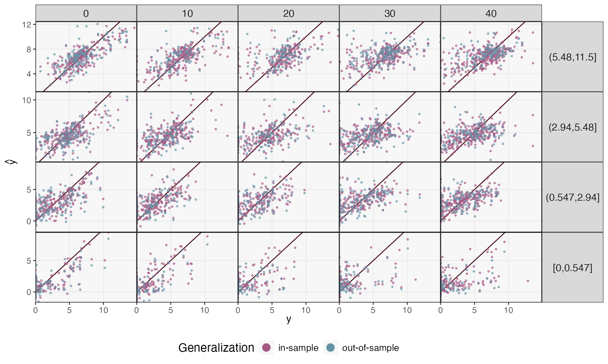
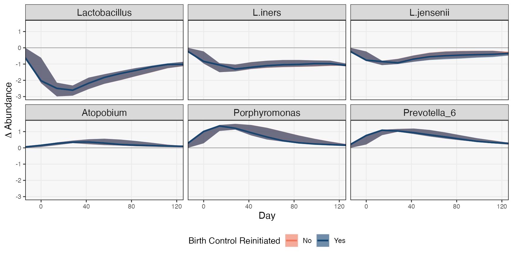
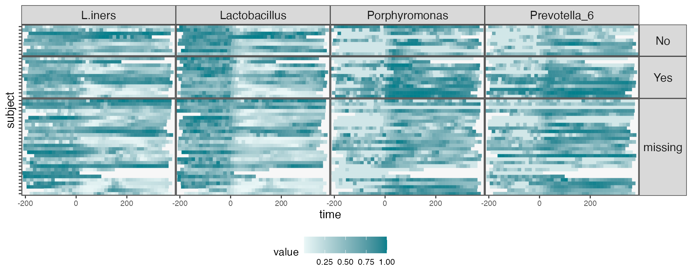

Postpartum Community Remodeling
postpartum.RmdData and Problem Context
How does birth influence the composition of the vaginal microbiome?
This question was first studied by (Costello, DiGiulio, Robaczewska,
Symul, Wong, Shaw, Stevenson, Holmes, Kwon, and Relman, 2022), who made
their data available in this repository. We
will re-analyze these data using mbtransfer, viewing birth
as an intervention event with the capacity to remodel microbial
community composition. We’ll illustrate the following workflow:
- Construct a
ts_inter(“time series intervention”) object, which is the expected input of our mainmbtransfermodeling function. - Evaluate the in- and out-of-sample prediction performance of our model.
- Select significant taxa using mirror statistics.
- Visualize hypothetical trajectories for significant taxa, with an emphasis on potential interactions with subject-level features.
The first three steps nearly parallel those for the diet and aquaculture studies discussed in the other vignettes, but the third follows an implementation specific to this problem context.
library(fs)
library(tidyverse)
library(mbtransfer)
library(glue)
th <- theme_bw() +
theme(
panel.grid.minor = element_blank(),
panel.background = element_rect(fill = "#f7f7f7"),
panel.border = element_rect(fill = NA, color = "#0c0c0c", linewidth = 0.6),
axis.text = element_text(size = 8),
axis.title = element_text(size = 12),
legend.position = "bottom"
)
theme_set(th)
set.seed(20230524)To construct as ts_inter object, we combine the
following datasets:
-
reads: Adata.frameof taxonomic compositions. Rows are samples and columns are taxa. -
samples: Adata.frameof sample-level descriptors. This is expected to havesampleandtimecolumns.samplemust match the rownames acrossreadsandinterventions. -
subject_data: Adata.frameof subject-level descriptors. This can be used to store information that is not time varying. -
interventions: Adata.frameof whose rows are samples and columns are interventions. This can be either a binary matrix of whether a given intervention (column) was present in a sample. An input series can also be continuously valued – see the aquaculture vignette ofr an example.
We created these datasets by lightly processing the raw data from the
published repository. Our processing script is available here. Note that
we converted all the subject-level data to numeric variables –
mbtransfer does not know how to handle factor inputs, so
they must be coded first.
reads <- read_csv("https://figshare.com/ndownloader/files/40322782/reads.csv") |>
column_to_rownames("sample")
samples <- read_csv("https://figshare.com/ndownloader/files/40322776/samples.csv")
subject_data <- read_csv("https://figshare.com/ndownloader/files/40322773/subject.csv")
interventions <- read_csv("https://figshare.com/ndownloader/files/40322770/interventions.csv") |>
column_to_rownames("sample")Note that, unlike most microbiome studies, these data has relatively few taxa (29). This reflects the typically low diversity of the vaginal microbiome.
Next, we will construct a ts_inter object using the
ts_from_dfs function. In their initial form, the samples
are not evenly sampled – we generally have biweekly sampling, but daily
resolution is available in the period immediately surrounding birth. 0
indicates the birth timepoint, samples with negative timepoints were
collected before birth. Our method is not able to handle nonuniform
temporal sampling, unfortunately, so we downsample to biweekly (14 day)
resolution using the interpolate function.
ts <- reads |>
ts_from_dfs(interventions, samples, subject_data) |>
interpolate(delta = 14, method = "linear")Now that we have constructed our interpolated ts_inter
object, it can be helpful to visualize the subject trajectories. We can
use pivot_ts to convert the ts_inter object
into a merged data.frame, and
interaction_barcode creates a faceted plot for selected
taxa. Each row below is the trajectory for one taxon from one subject.
Multiple taxa for each subject are grouped into the same facet (for an
alternative which groups subjects according to taxa, see the
interaction_hm function). We’ve further grouped subjects
according to their contraception status.
values_df <- pivot_ts(ts)
taxa <- c("Lactobacillus", "Prevotella")
interaction_barcode(values_df, taxa, "BirthControlYesNo", width = 14)
Prediction
We’ll now fit and evaluate some mbtransfer models. We
consider two fits – one which uses all the subjects, and another that
estimates using 25/49 of them. In both models, we use taxonomic
(P) and intervention (Q) lags of three
timepoints. In these data, that means we can look 6 weeks into the past
to predict current microbiome composition.
The model that uses all samples gives us a sense of the flexibility of the approach. If we think of the model as a denoiser / smoothing according to a subset of predictor composition, intervention, and subject descriptors, how closely can we predict community change? The second model gives us a sense of how well this model might generalize to new subjects. This is a harder question, because microbiome data tends to exhibit high subject-to-subject variability. That said, taxa which are predictable out-of-sample are worth noting, since their effects may be more general.
subject_data(ts) <- subject_data(ts) |>
select(subject, BirthControlYesNo) |>
mutate(BirthControlYesNo = ifelse(BirthControlYesNo == "Yes", 1, 0))
fits <- list()
fits[["in-sample"]] <- mbtransfer(ts, P = 2, Q = 2)
fits[["out-of-sample"]] <- mbtransfer(ts[1:25], P = 2, Q = 2)The block below computes the in and out of sample prediction errors corresponding to these two models. On test samples, we are allowed to look at timepoints up to week 12. We stop here because some samples have birth events starting on week 13, and we want to predict the effect of an intervention from before any have occurred.
By default, the predict function will fill in any timepoints that are
present in the intervention but not the abundance
values slot of each ts_inter element. This
means that we will extrapolate starting from timepoint all the way to
the end of sampling (roughly, 35 - 45 samples total). Below, we will
compare predictions across different time horizons. Since running
inference can take time, one simple way to speed up
mbtransfer is to request predictions across shorter time
horizons (e.g., by reducing the number of columns in the
interventions slot).
ts_preds <- list()
ts_missing <- subset_values(ts, 1:12)
ts_preds[["in-sample"]] <- predict(fits[["in-sample"]], ts_missing)
ts_preds[["out-of-sample"]] <- predict(fits[["out-of-sample"]], ts_missing[26:49])We compare the true vs. predicted abundances in the block below. Samples with more accurate predictions lie nearer to the diagonal. We’ve split the taxa by abundance – row labels give quantiles of average abundance. Note that each row has a different \(y\) axis. The clearest patterns are that,
- Short time horizons are easier to predict than long ones.
- In all panels, in and out-of-sample performance seem comparable, so we don’t have to be too worried about overfitting.
- More abundant taxa appear slightly easier to predict. This partly reflects the high noise level of the underlying data. For rarer taxa, however, many errors come from the model’s inability to predict exact zeros. This could potentially be improved by altering the model form.
map_dfr(ts_preds, ~ reshape_preds(ts, .), .id = "generalization") |>
filter(h > 0, h < 50) |>
mutate(h = 10 * floor(h / 10)) |>
ggplot() +
geom_abline(slope = 1, col = "#400610") +
geom_point(aes(y, y_hat, col = generalization), size = .7, alpha = .6) +
facet_grid(factor(quantile, rev(levels(quantile))) ~ glue("lags {h + 1} - {h + 10}"), scales = "free_y") +
labs(x = expression(y), y = expression(hat(y)), col = "Generalization") +
scale_x_continuous(expand = c(0, 0), n.breaks = 3) +
scale_y_continuous(expand = c(0, 0), n.breaks = 3) +
scale_color_manual(values = c("#A65883", "#6593A6")) +
guides("color" = guide_legend(override.aes = list(size = 4, alpha = 1))) +
theme(
axis.text = element_text(size = 10),
panel.spacing = unit(0, "line"),
strip.text.y = element_text(angle = 0, size = 12),
strip.text.x = element_text(angle = 0, size = 12),
legend.title = element_text(size = 14),
legend.text = element_text(size = 11),
)
Attribution Analysis: Selecting Important Taxa
Given the reasonable performance of the model, it makes sense to try
following-up with some more formal statistical inference. Specifically,
we want to know which taxa are most affected by the intervention, but we
some formal statistical guarantees that we aren’t reading too much into
anything that is just noise. To this end, we have included a
select_taxa function that performs selective inference
through data splitting, following (Dai, Lin, Xing, and Liu, 2020).
Roughly, we estimate marginal effects of different hypothetical
interventions on each taxa. We do this over. many random splits of the
data, and if a similar marginal effects is detected across the. splits,
then we intuitively suspect that the intervention does influence that
taxa. The algorithm in (Dai, Lin, Xing et al., 2020) formalizes this
intuition in a way that ensures that the false discovery rate is
controlled. See the manuscript accompanying the package for details.
Practically, to implement this selection algorithm, we need to
provide the counterfactual interventions that we want to contrast. This
is done in the step below. The steps helper function
creates a few example counterfactuals.
ws <- steps(c("birth" = TRUE), lengths = 2:4, L = 4)
ws
#> [[1]]
#> t1 t2 t3 t4
#> birth 0 0 0 0
#>
#> [[2]]
#> t1 t2 t3 t4
#> birth 1 1 0 0
#>
#> [[3]]
#> t1 t2 t3 t4
#> birth 1 1 1 0
#>
#> [[4]]
#> t1 t2 t3 t4
#> birth 1 1 1 1We’ll contrast the taxa trajectories when the first two timepoints
are and are not assumed to belong to the birth
intervention. By default, we control the FDR at a \(q\)-level of 0.2 – this can be modified
using the qvalue argument. We have to fit our model over 20
random splits of the data, so this step takes some time. More splits
yields higher power, but small values n_splits will still
guarantee FDR control, and you will still be able to run the rest of the
vignette even if you set n_splits to a value like 3 or
4.
staxa <- select_taxa(ts, ws[[1]], ws[[2]], ~ mbtransfer(., 2, 2), n_splits = 25)
#> Training models for split 1/25
#> Training models for split 2/25
#> Training models for split 3/25
#> Training models for split 4/25
#> Training models for split 5/25
#> Training models for split 6/25
#> Training models for split 7/25
#> Training models for split 8/25
#> Training models for split 9/25
#> Training models for split 10/25
#> Training models for split 11/25
#> Training models for split 12/25
#> Training models for split 13/25
#> Training models for split 14/25
#> Training models for split 15/25
#> Training models for split 16/25
#> Training models for split 17/25
#> Training models for split 18/25
#> Training models for split 19/25
#> Training models for split 20/25
#> Training models for split 21/25
#> Training models for split 22/25
#> Training models for split 23/25
#> Training models for split 24/25
#> Training models for split 25/25
saveRDS(staxa, file = "staxa-postpartum.rds")
#readRDS("staxa-postpartum.rds")The ms element of this object includes the raw mirror
statistics that led to the final inference. The larger the value of
these mirror statistics, the stronger the estimated intervention effect.
Mirror statistics that are symmetric around zero suggest that there is
no intervention effect. Visualizing these results, it seems that most
taxa in the data are affected by the intervention. This contrasts with
the other vignettes in this package, where effect seems more
taxa-specific. The result is consistent with the findings of (Costello,
DiGiulio, Robaczewska et al., 2022), though. Delivery dramatically
remodels the vaginal microbiome.
staxa$ms |>
mutate(
taxon = taxa(ts)[taxon],
lag = as.factor(lag),
selected = ifelse(taxon %in% unlist(staxa$taxa), "Selected", "Not Selected")
) |>
ggplot() +
geom_hline(yintercept = 0, size = 2, col = "#d3d3d3") +
geom_boxplot(aes(reorder(taxon, -m), m, fill = lag, col = lag), alpha = 0.8) +
facet_grid(. ~ selected, scales = "free_x", space = "free_x") +
scale_fill_manual(values = c("#c6dbef", "#6baed6", "#2171b5", "#084594")) +
scale_color_manual(values = c("#c6dbef", "#6baed6", "#2171b5", "#084594")) +
labs(y = expression(M[j]), x = "Taxon") +
theme(axis.text.x = element_text(angle = 90, size = 11))Comparing Counterfactual Trajectories
Mirror statistics can highlight the species that are the most influenced by the intervention, but they do not help us describe the “shape” of an intervention effect. Are there taxa that are immediately impacted, but which recover quickly? Are there others whose effects are delayed? Transfer function models can help to answer this question. The idea is to simulate identical interventions across all subjects using the fitted model to predict the subsequent taxonomic abundance trajectories. Do be cautious with interpretation, though. Simpler models (smaller \(P\) and \(Q\)) have limited expressivity – there are only so many shapes they can approximate. That said, the simulated trajectories often provide a useful summary of intervention effects across heterogeneous populations.
In the block below, we begin the simulation at the timepoint
immediately before the first observed intervention. From here, we
simulate four counterfactual outcomes. We toggle both (1) whether the
birth intervention occurs and (2) the BirthControlYesNo
variable. The reason for simulating the four combinations is to see
whether the learned intervention effect varies among women who do and do
not use birth control following delivery – the original paper
hypothesizes that there may be a difference, based on prior biological
knowledge and a few examples from the data.
ws <- steps(c("birth" = TRUE), lengths = 2, L = 10)
start_ix <- map_dbl(ts, ~ min(which(.@time >= -14))) - 1
sim_bc <- list()
for (i in 0:1) {
bc <- subject_data(ts) |>
mutate(BirthControlYesNo = rep(i, n()))
sim_bc[[i + 1]] <- counterfactual_ts(ts, ws[[1]], ws[[2]], start_ix) |>
map(~ replace_subject(., bc)) |>
map(~ predict(fits[["in-sample"]], .))
}We visualize a few of the trajectories below. Just so that the figure
is not too large, we’ve restricted attention to just a few of the taxa
that are known to be affected by the intervention. We use the
ribbon_data helper function to extract the 25 and 75%
quantiles of the simulated trajectories. It’s immediately clear which
taxa become more/less abundant in the population. It seems that
trajectories mainly differ in magnitude, but not in shape – all taxa
begin to recover to pre-intervention levels at approximately the same
rate. Moreover, the simulated BirthControlYesNo
trajectories seem identical, indicating that the model has not learned
any potential interaction. The paper’s discussion is still plausible,
but the effect does not seem so strong across the entire population that
it is considered worth learning by the model.
focus_taxa <- c("Porphyromonas", "Lactobacillus", "Prevotella_6", "L.jensenii", "L.iners", "Atopobium")
rdata <- sim_bc |>
map_dfr(~ ribbon_data(.[[2]], .[[1]], focus_taxa, delta = 7), .id = "BC") |>
mutate(
BC = fct_recode(BC, No = "1", Yes = "2")
) |>
filter(time > -25, time < 80)
pal <- c("#F2785C", "#144673")
ribbon_plot(rdata, group = "BC") +
facet_wrap(~ reorder(taxon, median)) +
labs(y = expression(paste(Delta, " Abundance")), x = "Day", fill = "Birth Control Reinitiated", col = "Birth Control Reinitiated") +
scale_color_manual(values = pal) +
scale_fill_manual(values = pal) +
theme(
axis.title = element_text(size = 12),
strip.text = element_text(size = 12)
)
It is always good practice to use model-based summaries to dig deeper into the original data (this is sometimes called “Progressive Disclosure” in the data visualization literature). This is more directed that attempting to visualize all the data at once, but it is also more critical than just reporting model summaries as if they captured all of reality. In the heatmaps below, each row is a different sample, and the rows correspond to the different birth control categories. Similarities across panels help explain why the model did not learn an intervention effect. Moreover, the directions of the effects are generally consistent with the learned effects. Hoever, this is not universal – consider the subjects whose L.iners abundance increased following delivery! We could imagine doing a residual analysis to detect these outlying subjects, in the spirit of (Holmes, 1993).
values_df <- pivot_ts(ts) |>
group_by(taxon) |>
mutate(value = rank(value) / n()) |>
select(-BirthControlYesNo) |>
left_join(subject_data)
vis_taxa <- c("Lactobacillus", "L.iners", "Porphyromonas", "Prevotella_6")
interaction_hm(values_df, vis_taxa, "BirthControlYesNo", -1, width = 14) +
theme(
axis.text.y = element_blank(),
strip.text = element_text(size = 12)
)